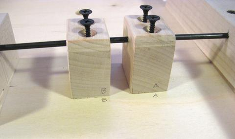
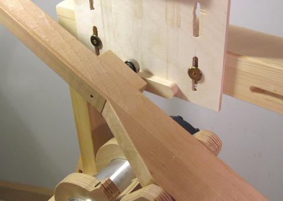

Constructing the pantographThe trickiest part of building the pantorouter is building the pantograph mechanism. I figured I might as well start with the most complicated part of that, which is the router mount.
I used a 1:1 printout from my CAD model and traced it onto plywood to get the rough outline.
Because the relative positions of the holes for the pins and router are the most critical, I measured those with a ruler and compass. Paper templates can be very accurate, but I printed this template on a laser printer, and my experience is that laser printers, unlike ink jet printers, can't be trusted to be very accurate. The rear-most layer of the router support needs to have extra bits cut away from it to accommodate the fat back end of the router. You will have to adapt this to match the shape of your router. I tilted the bandsaw table to cut a cone shape to match the widening part of the router, plus a few extra indentations for protrusions in the router. I'm trimming an extra little bit off in this photo because the way I cut it the first time didn't leave enough room.
It would have been easier to make the router mount less deep so that the back layer
is still on the cylindrical portion of the router, but it's better to make the pantograph as
deep as possible. This gives it a bit more rigidity and strength and also makes the design
less sensitive to slight inaccuracies of construction.
Gluing the back-most layer and the layer next to it together. It's critical to get the alignment of these two just right. I inserted the shaft as an alignment pin. I also pressed both pieces flat on my work surface to make sure they were aligned vertically. Getting the layers all aligned is tricky. My recommendation is to take the sandwich of two layers and glue on the spacers without the last layer. Let the glue dry, then glue on the last layer. That way, you don't have to get so many parts aligned all at once.
That's what I ended up doing, but first I tried to glue it all together in one go, but something
always got out of alignment before I got it all clamped, so I eventually gave up and glued the
spacers on separately, then glued on the front layer. I was too busy making sure everything
was aligned, so I neglected to take a photo, but this CAD rendering illustrates what I did.
I'm checking the alignment of the back layer with the front layer with a square as I'm clamping it.
As with the steps earlier, I pressed everything down on my work surface to get all the pieces touching
the work surface. This ensured all pieces were aligned in that direction.
The other links of the pantograph are simpler. As with the router mount, it's best to start by gluing the spacer to one part of the link, letting the glue dry, and then glue on the second link. Otherwise, there are too many things that can slip out of alignment while clamping it together. I neglected to take photographs of this (too busy getting it all to line up), so I made a CAD rendering showing gluing on just the spacer of the short link.
Once the spacer is on, glue on the other side piece.
Once the spacers and side pieces are on, glue another piece of 9 mm thick baltic birch on the back of it. Thickening up the link really increases its torsional stiffness, which helps keep the pantograph accurate. I'm gluing the backing onto the longer of the pantograph links in this photo. Adding the spring-cam to the short link. This cam is just screwed in place after the link is assembled. Accuracy for this part is not nearly as critical as it is for the rest of the pantograph. The spring cam for the long link is offset by a spacer to put it further back where there is room for the spring. Both the support block, and the spring cam are only screwed on. I'm looking through the hole in the support block to ensure that it lines up with the two holes in the long link as I'm attaching it. I'm tapping the screws with a hammer to transfer the center location onto the link before drilling the pilot holes for the screws in the link. To attach the string to the link, I drilled a 1/4" hole though the block, and carved a cavity on the other side of it to provide space for the pin that the string loops around. Here's the router mount, the long link and the short link, plus the operating handle which forms the fourth link of the pantograph. Note that I don't have the spring cam block and its extension attached to the long link in this photo.
When you make the operator handle, for the two through holes, precisely mark and drill half-way from
one side, and then drill all the way through from the other side. The small drills have a
slight tendency to follow the grain of the wood, so drilling them all the way through from
one side could lead to a lot of error by the time the drill comes out the other side.
But if you drill half way from one side first, then, coming from the other side,
the drill will line itself up with the existing hole and follow that.
Initial trial assembly. The shafts should fit tight enough that they need to be tapped in with a hammer. Grind a taper onto the ends of the shafts before assembly. This will help the shafts align with the holes as you drive them in. It also prevents the shaft from scraping away wood on the insides of the holes, which would eventually enlarge the holes.
There should be room for washers between the wooden pieces, but don't bother with the washers on
initial assembly. You will probably take it apart and put it together a few more times before
everything is done.
Here's the pantograph, with router mount, after initial assembly. When I took this photo, I hadn't yet drilled the screw hole to the mounting block (behind the spring cam, bottom right), nor had I made the support blocks that go under the pantograph. Next it's time to attach the mounting parts to the base plate.
I'm using my calipers to ensure that the bar with the mount towards the front is the right
distance from the front edge of the wood.
Once I have my bar position exactly measured, I'm tapping the screws in with a hammer to mark the locations for my pilot holes. I'm using #6 drywall screws. A 9/64" hole (3.57 mm) is a perfect fit for the outside of these screws (they fit just snugly in that), so that my screws also serve as alignment pins of sort. I use the divots from tapping the screws as centers for my pilot holes. I drilled these with a 5/64" (2 mm) drill. I used the same method to get the other parts lined up. I inserted my lower shaft without the pantograph to get the alignment of the support blocks that go underneath the pantograph just right. Again, I'm tapping the screws with a hammer to mark exactly where I need to drill the pilot holes.  The precision of hand made parts is never perfect, so it's best to mark which way the pieces went on. That way, there won't be additional positional error introduced by accidentally swapping the parts around later. Pulling the shaft back out can be difficult. I found the best way to get it back out is to attach a small drill to the end of it. Then, slowly run the drill to spin the shaft while pulling it out. Space around the pantograph parts is pretty tight. This photo shows the long link (left) and the short link (right) attached to the bottom shaft. I took this photo after I assembled everything and then removed the control lever because I still needed to make some changes to it. It's much easier to assemble the pantograph separately from the base normally, so you wouldn't necessarily get this view.
Also note that the spring towards the top right of the photo is normally to the left, but with the
link flipped all the way down, it was easier to get it out of the way by flipping it to the right.
This photo shows the pantograph mechanism on it's base, without anything else attached. This was still trial assembly. On final assembly, the base for the pantograph would already be attached to the base below using the ball slides. Without the router weighing the pantograph down, the springs will lift the pantograph roughly straight up.
I experimented with using two springs on each side, one inside the other.
I had originally calculated the spring
force and cams to compensate for just the weight of the router, but then added the second spring
to also compensate for the weight of the wooden mechanism. The two springs overcompensated, so the
router always ended up at the top of its range of motion unless I pushed down on the handle.
While this was comfortable to operate, it was awkward when mounting templates because the router
would always be in the way when mounting templates. So it's better to slightly under-compensate
for the total weight so that the router normally rests on the bottom.
 A ball bearing attached to the control lever is used to follow the templates. Ideally, the ball bearing should be twice the diameter of the router bit, so that the template will be exactly twice the size of the final shape cut by the router. But router bits don't always cut to the exact width as is nominal, and some sizes of ball bearings are hard to get. I was unable to get a 1" outside diameter ball bearing from a local bearing store. It seems precision bearings are mostly in metric these days. If your bearing is not twice the size of your router bit's cut, you can calculate the width for a tenon template as follows:
Wtemplate = 2 * (Wtenon + Dcutter) - Dbearing
The ball bearing is mounted on a small block of hardwood, which in turn is screwed to the lever. I found that I needed different sized mounting screws to accommodate different sized bearings. The mounting screws in turn need different sized holes, so it's best to just leave the ball bearings mounted to the block, and swap out the whole block when changing bearing sizes. It's best to use a knock-down screw to mount the handle. You already need to get some of these screws for the template mount, so might as well use another one here. The handle is a piece of 1" (25 mm) dowel with a 1/4" (6 mm) hole in the middle of it. The screw is screwed into an un-threaded slightly undersized hole in the wood. Machine screws actually hold surprisingly well when screwed straight into unthreaded holes in hardwood.
I'ts your choice as to whether you want the handle to spin or not. Making the handle so it
spins freely on the screw feels nicer, but it's probably safer if it doesn't spin - less likely
to slip out of your hand that way.
The photos above are for various stages of trial assembly. It is unlikely that your first assembly of the mechanism will be your final assembly, so there is no point in assembling it with the washers until everything else is all checked out for accuracy and alignment. Getting the washers between the parts can be devilishly tricky. A workable method is to start with two pieces of shafting, one from either side. The shaft to the right is the one I want to use, and the one to the left is a temporary shaft to hold the washer in place. After hanging the two washers on the shafts, the middle part is pushed in between the shafts until it hits the shafts. The shafts are then carefully pulled back just far enough to allow the piece to slide in between, but not so far as to drop the washers. Once the middle piece is in place and its holes lined up, both shafts are pushed in a little bit to secure it in place.
Next, the shaft from the right is pushed all the way through. This pushes the shaft from
the left out, but with one shaft pushing the other through, the washer won't have the opportunity
to fall out.
|
{kind=link}
{kind=link}
{kind=link}
{kind=link}
{kind=link}
{kind=link}
{kind=link}
{kind=link}
{kind=link}
{kind=link}
{kind=link}
{kind=link}
{kind=link}
{kind=link}
{kind=link}
{kind=link}
{kind=link}
{kind=link}
{kind=link}
{kind=link}
{kind=link}
{kind=link}
{kind=link}
{kind=link}
{kind=link}
{kind=link}